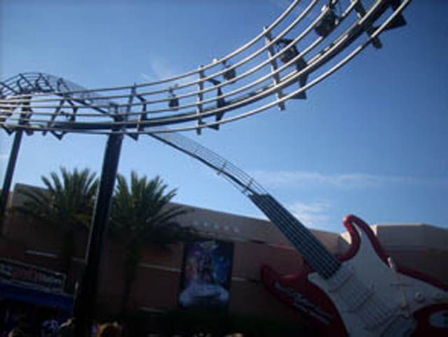

| |
Rock 'N' Rollercoaster Review

We're here at the Walt Disney World Resort. Today, we'll be heading on over to MGM Studios (Or Hollywood Studios) to go and ride Rock'N'Rollercoaster. After going in and watchng the amusing preshow, you head through the line where your limo awaits. You get in, pull down the OTSRs, and we're off. We head around to a turn and go stop at a sign. The sign says many things about Traffic Jams, the 101 Freeway, and Home. This gets us prepared and ready to go. Then after it says something like Merge like you've never merged before, you launch. Which oddly, has nothing to do with merging at all. At one point throughout the launch, you see a flash of blue lights that you go through. Then you head up through a sea serpent roll in the dark. It's very cool being in a sea serpent roll in the dark on a Disney Coaster. Then you go through some turns and do some cool stuff while looking at some cool lights. You see stuff like the 5 Freeway flying right past you in the dark. Kind of makes me feel back at home in Southern California. Somewhere in the dark, we head through a corkscrew. When you go through it, you'll know. And then you keep seeing a bunch of street signs fly past you as you keep doing stuff. Finally, you end up seeing a sign that says Slow Parking which means we're in the brake run and the ride is in fact over. This is one of my favorite rides at the Walt Disney World Resort and I'd highly recommend you ride it as it really kicks a lot of ass.
8/10
Location: Walt Disney World Resort
Opened: 1999
Built by: Vekoma
Last Ridden: November 24, 2007
I have ridden this exact same ride at the following parks.
Disneyland Paris
Rock'N'Rollercoaster Photos

Home
|